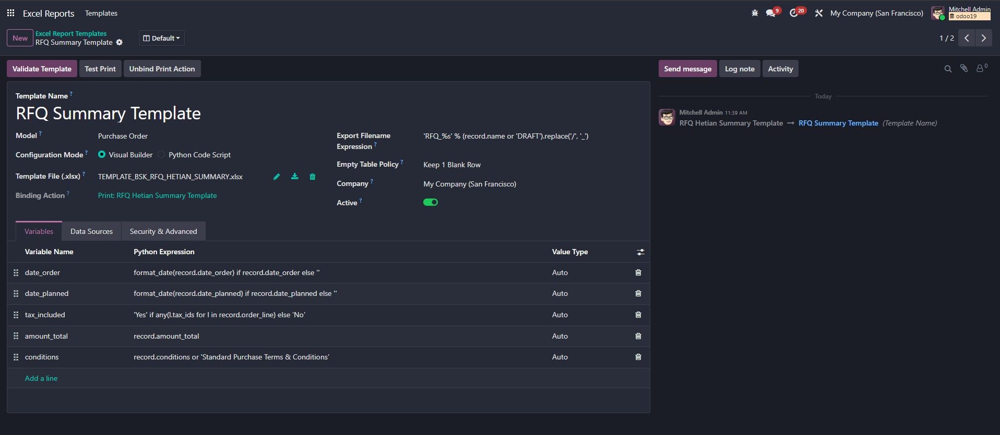
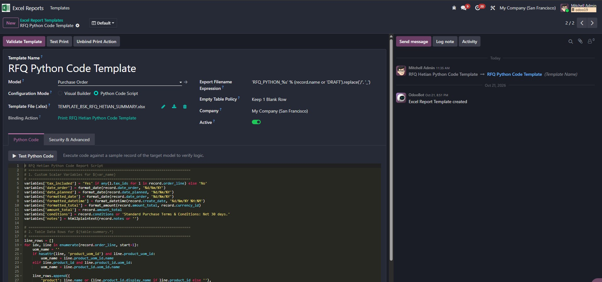
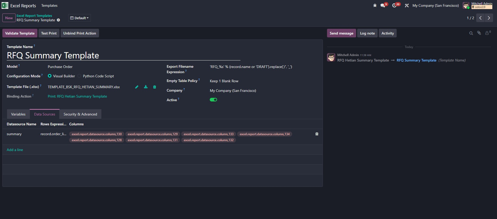

Upload real .xlsx workbooks designed in Microsoft Excel and render dynamic Odoo data with 100% fidelity. Preserves fonts, cell fills, custom borders, merged cells, row heights, conditional formatting, and Excel formulas with zero ORM overhead.
Supports native .xlsx templates up to 10MB. Macro security rejects .xlsm files automatically.
Upload an Excel workbook, add placeholders, and configure variables and table data sources from the Odoo form. Your business team can maintain the layout without writing Python.

Switch to Python Code mode for computed values, conditional logic, and custom table rows. The execution context uses a controlled module whitelist managed by administrators.


Create a reusable workbook once, validate it against a real record, and bind it to Odoo's native Print menu. The result keeps your Excel formatting, formulas, merged cells, and images intact.
Tired of writing hundreds of lines of fragile Python code or complex QWeb XML to generate styled spreadsheets? Design visually in Excel instead.
Design reports visually in Excel with your corporate fonts, brand colors, complex borders, header banners, and merged cells. What you design in Excel is exactly what downloads.
Our Section 7.2 layout shift engine expands line item rows dynamically, copies row heights and cell formatting, translates relative formulas, and shifts downstream tables smoothly.
Bind any template directly to Odoo's native Print action menu on any target model (Sales, Purchase, Invoicing, Inventory). Users print with a single click.
Place intuitive tokens anywhere in your template workbook. The engine resolves them cleanly at runtime:
Traverse dot-separated Odoo relational fields directly into cell values:
Mark any row with table placeholders for One2many row expansion:
Insert binary images with automatic aspect-ratio bounding box fit:
Define computed runtime variables without modifying Odoo models:
How our pure-Python engine expands rows while preserving complex spreadsheet structures.
Scans sheets and sorts loop rows descending by row index so lower shifts never disrupt upstream loop coordinates.
Saves cell merges without calling destructive unmerge, avoiding slave border loss, and captures conditional formatting rules.
Inserts rows, duplicates template styles, translates relative formulas, clones loop merges, and shifts downstream tables by Δ.
Expands summary formula boundaries (e.g. =SUM(I19:I21)) and flags workbook for automatic calculation upon opening.
How Excel Template Report compares to traditional reporting methods:
Deploy custom Excel reports in under 5 minutes without writing a single line of backend code:
Open Microsoft Excel and style your sheet. Place ${record.field} and ${table:ds.key} tokens in the cells where data belongs.
Go to Technical > Excel Reports > Report Templates. Select your model and upload the .xlsx file.
Click Validate Template to check placeholders, then click Bind Print Action to add it to Odoo's Print menu.
Open any record and click Print. The rendered Excel file downloads immediately with full styling intact.
openpyxl >= 3.1.0, Pillow >= 10.0.0.xlsx | Output: .xlsx or .zip.xlsm macroscompany_idgroup_ids<list> • <chatter/>Need custom template engineering, complex financial reporting workflows, or assistance? We are here to support your team.